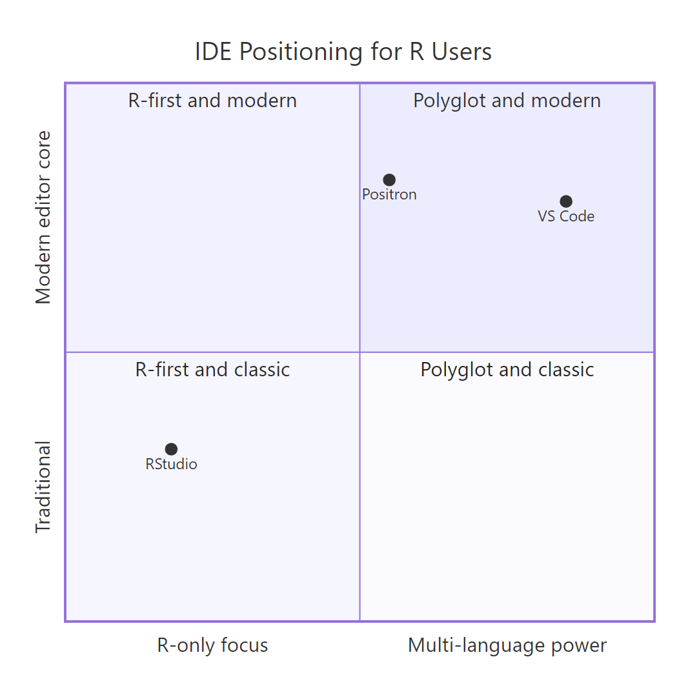
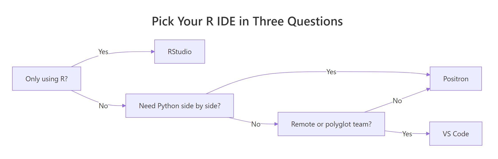

RStudio vs VS Code vs Positron for R: Which IDE Is Actually Best?
Your R IDE shapes how fast you move, debug, and think. In 2026 you have three serious choices, RStudio, VS Code, and Positron, and the right pick depends less on hype and more on what you do every single day.
Which IDE should you actually pick in 2026?
The honest short answer: RStudio if you live inside R, VS Code if you jump between R, Python, and shell all day, Positron if you want RStudio-style data panes on a modern editor core. Before we dig into features, here's a neat trick, R itself can tell you which IDE is hosting the current session. Run this in your console right now and see which labels come back.
The output depends on where you run it. RStudio sets RSTUDIO=1. Positron sets POSITRON_VERSION to a version string. VS Code sets TERM_PROGRAM=vscode when R is launched from its integrated terminal. An empty vector means you are in a plain R console. This one call proves a quieter point: your R code is portable across all three IDEs, only the wrapper changes.
.Rprofile work in all three, picking an IDE is about ergonomics, not compatibility.Try it: Write a helper ex_which_ide() that returns "RStudio", "Positron", "VS Code", or "Other" based on the environment variables above.
Click to reveal solution
Explanation: nzchar() tests for non-empty strings cleanly, and the fall-through return style makes the branch order obvious.
What makes RStudio the default R IDE?
RStudio has been the default R workbench since 2011. Posit built it with one goal, make R data science as productive as possible, and that focus still shows. You get a polished Environment pane, a click-to-open data viewer, a Plot pane, an integrated help browser, Quarto and R Markdown with a visual editor, and a one-click Run App button for Shiny. Nothing to configure, nothing to install.
Most of that convenience is really a GUI wrapper around functions you already have in base R. The Environment pane, for example, is mostly just str() and summary() called on every binding in your workspace. Run the three inspection staples below and you'll see exactly what RStudio shows you in its sidebar.
Read the three outputs in order and you already know the shape, the distribution, and the first rows of iris, which is exactly what RStudio's panes surface for free. The trade-off is depth. RStudio's Git GUI is basic, its performance drops on very large source files, and proper remote development requires the paid Posit Workbench. And the Python story, despite reticulate, still feels second-class next to VS Code or Positron.
str() is the single fastest way to inspect any R object. Works on data frames, lists, S4 classes, model fits, everything. If an object surprises you, str() first, ask questions later.Try it: Write ex_inspect(x) that calls str(), prints the class, and returns the first three rows (or first three elements if x is a list). Test it on mtcars.
Click to reveal solution
Explanation: str() writes straight to the console so its output appears before the cat() label, and returning head() lets callers capture a preview for further use.
Where does VS Code outshine RStudio for R?
VS Code is the world's most popular code editor, and its R support has grown up fast. With the REditorSupport R extension, the languageserver package, and httpgd for graphics, you get intellisense, go-to-definition, inline help, and plot output that rivals RStudio for day-to-day editing. Where VS Code pulls ahead is on the stuff RStudio barely touches, free remote development over SSH, Dev Containers, WSL, polyglot editing across R/Python/SQL/JavaScript, best-in-class Git, and every AI coding assistant under the sun.
The catch is that nothing comes preconfigured. Before you can be productive, you need a few R packages installed. Here's a tiny helper that checks whether your session is VS Code-ready, and returns a data frame that VS Code's own data viewer can render nicely.
A FALSE row is a hint, not an error, you'd run install.packages("languageserver") and install.packages("httpgd") once on your real machine. The function is also a nice example of how little code it takes to build your own "setup audit" for any toolchain. The main weakness of VS Code for R users is also the flip side of its strength, you are the one wiring it up, and until you do, RStudio feels friendlier.
Try it: Write ex_has_pkg(pkg) that returns TRUE if a package is installed, FALSE otherwise. Test it on "stats" (ships with R) and "not_a_real_pkg".
Click to reveal solution
Explanation: requireNamespace() is the quiet, non-attaching way to ask "is this package installable on this session?", safer than library() for conditional checks.
What does Positron bring to the table?
Positron is Posit's next-generation IDE, released in 2025 and licensed under Apache 2.0. Under the hood it uses the same Monaco editor that powers VS Code, so you get the modern text-editing experience for free, command palette, multi-cursor, minimap, extensions. On top of that, Posit added back the features that made RStudio famous: a proper data explorer, a variables pane, a plot pane, a connections pane, and separate consoles for R and Python that treat both languages as equal citizens.
In practice the biggest win is portability. A .Rprofile you tune once works in RStudio, VS Code, and Positron without edits, because all three are just R sessions. Here's a cross-IDE startup snippet that shows a few options() before and after you tweak them.
digits = 4 trims noisy trailing decimals in the console; scipen = 999 discourages scientific notation so big numbers print as 1234500 instead of 1.2345e+06. Drop those two lines into ~/.Rprofile and every IDE you open picks them up, no per-IDE duplication. Positron's main drawback today is maturity. Shiny tooling is still catching up to RStudio, some R Markdown niceties are not ported yet, and the community is smaller, so troubleshooting is a little lonelier.
Try it: Write ex_show_opts() that returns a named list of three options of your choice (digits, scipen, warn) using getOption().
Click to reveal solution
Explanation: getOption() reads a single option; wrapping several in a named list gives you a tidy snapshot you can print, log, or diff against a later reading.
How do the three IDEs compare on the features that matter?
Feature tables age fast, so take this one as a snapshot of early 2026 rather than gospel. The rows below are the features I actually reach for on a normal work day, data viewing, Quarto, debugging, remote dev, ecosystem. Scores are on a simple 1-5 scale where 5 means "best in class" and 1 means "not really there."
| Feature | RStudio | VS Code | Positron |
|---|---|---|---|
| Data frame viewer | 5 | 2 | 5 |
| Environment pane | 5 | 3 | 5 |
| Plot pane | 5 | 4 | 5 |
| R Markdown / Quarto | 5 | 4 | 4 |
| Shiny tooling | 5 | 2 | 3 |
| Python first-class | 2 | 5 | 5 |
| Remote dev (SSH / containers) | 2 | 5 | 5 |
| Git integration | 3 | 5 | 5 |
| Extension ecosystem | 2 | 5 | 4 |
| AI coding assistants | 3 | 5 | 5 |
You can also build that same table as an R data frame and sort it however you like, useful if you want to pick the IDE that wins on your top three features.

Figure 1: Where each IDE sits on the R-focus vs multi-language axis.
The two rows that pop out say something real: VS Code's Git and extension ecosystem still lead even against Positron, because Positron ships only a curated subset of VS Code extensions. Everywhere else, Positron matches or beats VS Code for R-specific work while keeping the modern editor. That is the whole pitch of Positron in one table.
Try it: Write ex_top_feature(df, ide) that returns the feature(s) where the given IDE column holds the maximum score of that row. Test on ide_compare with "Positron".
Click to reveal solution
Explanation: apply(..., 1, max) computes the maximum score per row across the three IDEs; rows where the target IDE matches that max are the ones where it ties or wins.
Which IDE fits YOUR workflow?
Pick based on what you actually do, not on which logo looks prettiest. Three questions is usually enough: Do you use any language besides R? Do you need Python side-by-side with R? Is your work remote or polyglot-team? The flow below walks those three questions in order and lands you on a single recommendation every time.

Figure 2: A three-question decision flow for picking your R IDE.
You can also write the same flow as a small R function. Given a profile, a named list of yes/no answers, recommend_ide() returns the IDE that best fits. Two example profiles show the divergence: a stats-only researcher and a polyglot data platform engineer.
Two profiles, two different answers, and the function is small enough to extend. A statistician who never opens a terminal gets RStudio; a platform engineer who SSHes into cluster nodes gets VS Code. You can add more branches as your workflow grows, and you can rerun the recommender whenever your situation changes.
Try it: Extend the logic with ex_recommend_remote(profile) that short-circuits to "VS Code" any time profile$remote_or_polyglot is TRUE, regardless of other fields.
Click to reveal solution
Explanation: isTRUE() guards against NULL or NA; the fall-through call reuses the original recommender for everything else.
Practice Exercises
Two capstone exercises. Both combine functions from earlier sections, so run the tutorial blocks above first if you want ide_env, r_pkgs_check(), and ide_compare in your session.
Exercise 1: One-call startup report
Write startup_report() that prints a labelled block with three pieces of information: which IDE is hosting the session, the installation status of languageserver/httpgd/rlang, and the current digits and scipen options. Use cat() for the labels and re-use the helpers from earlier blocks. Save the data frame you print to my_report.
Click to reveal solution
Explanation: The cat() block prints the header while the function returns the package data frame, giving you both a visual report and a value you can save.
Exercise 2: Score-based IDE picker
Write best_ide_for(user_answers) that takes a named integer vector of weights over features, for example c(data_viewer = 3, python = 1, git = 2), and returns the IDE with the highest weighted total based on ide_compare. Save the winner to my_winner.
Click to reveal solution
Explanation: Each matched row is multiplied by the user's weight, column sums give per-IDE totals, and which.max() returns the winning column, a tiny weighted-vote recommender in five lines.
Putting It All Together
Here is the one startup script that uses everything above. Drop it into ~/.Rprofile and every R session, in any of the three IDEs, prints a labelled report, sets sane defaults, and leaves you a recommend_ide() helper for when someone on your team asks which IDE to pick.
The script does three useful things in under twenty lines, sets cross-IDE options, detects the host, and lists packages you still need to install. Because it only depends on base R, it runs before any library is loaded, which is exactly what .Rprofile needs.
Summary
| IDE | Pick it if you… | Main weakness |
|---|---|---|
| RStudio | live inside R, love Shiny, want zero setup | weak remote dev, second-class Python |
| VS Code | edit R beside Python/SQL/JS, live in SSH or containers | no data pane, setup required |
| Positron | want RStudio panes on a modern editor with first-class Python | young product, Shiny tooling still catching up |
References
- Posit, RStudio open source product page. Link
- Posit, Positron IDE documentation. Link
- Microsoft, Visual Studio Code. Link
- REditorSupport, R extension for VS Code. Link
- Posit, Quarto scientific publishing system. Link
- Stack Overflow, 2024 Developer Survey, Integrated Development Environments. Link
Continue Learning
- Install R and RStudio, the zero-friction first setup for new R users
- Is R Worth Learning in 2026?, the business and career case for picking up R today
- R vs Python, how the language choice interacts with the IDE choice